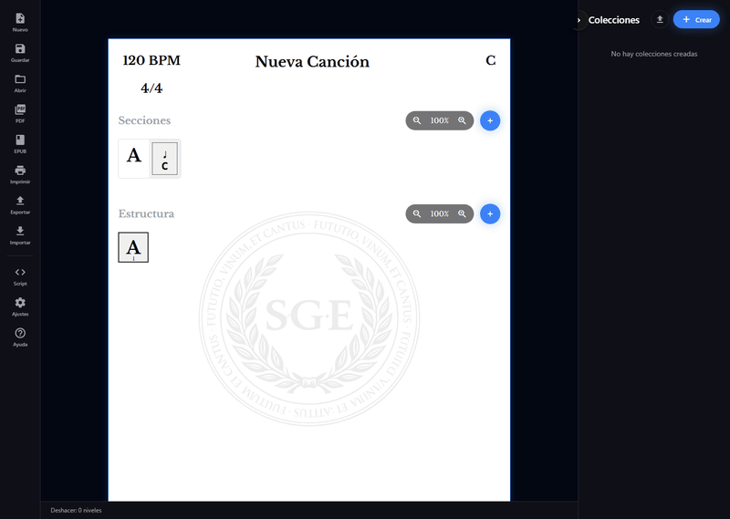
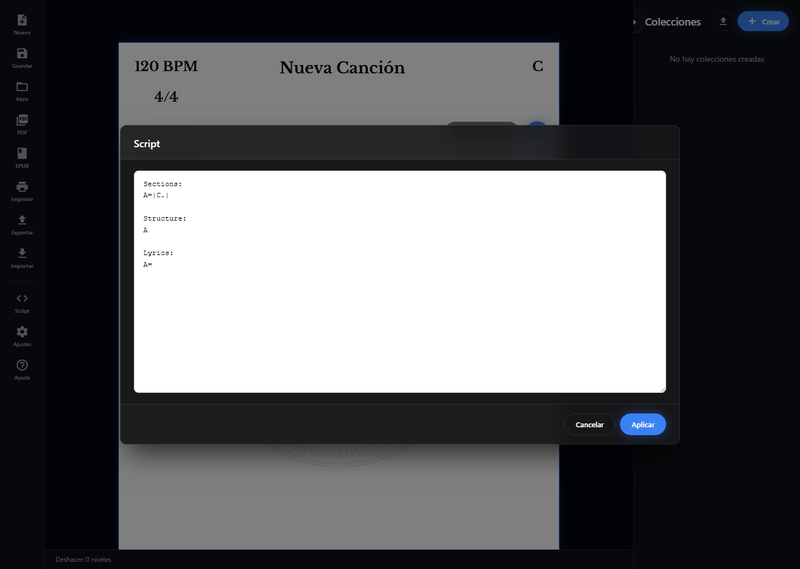
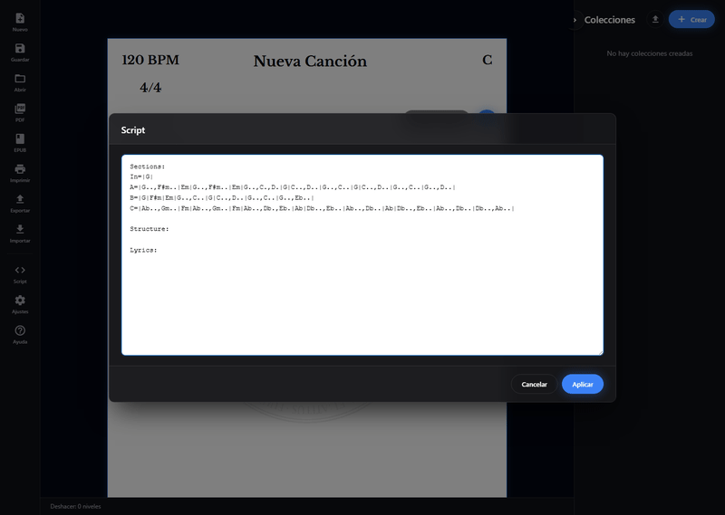
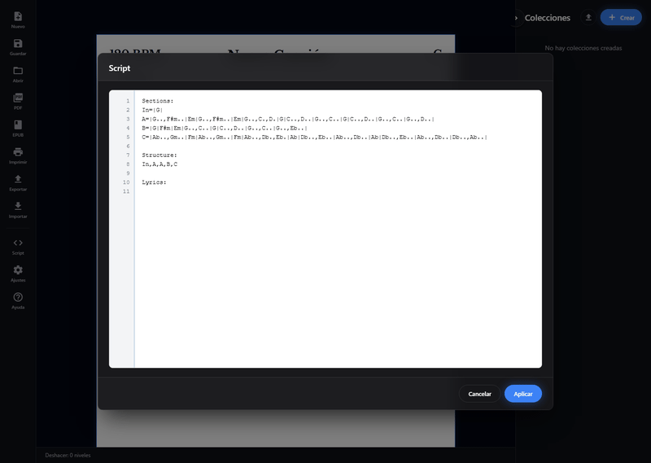
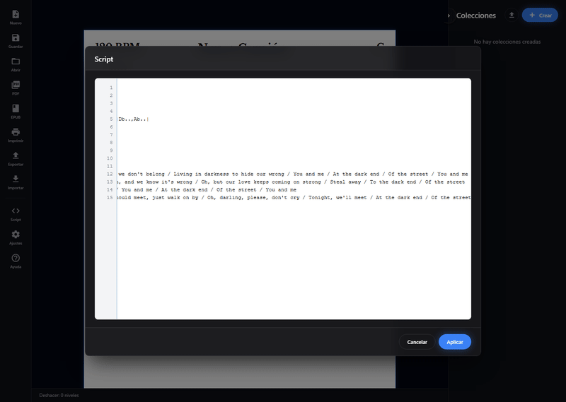

Group Sheet Editor
Aprende a crear una canción con Script
En esta guía verás cómo construir Dark End Of Street desde la función Script, escribiendo primero las secciones, después la estructura y al final las letras.
Paso 1 de 5
Abrir el editor de script

La vista Script reúne toda la canción en un único texto. Es la forma más rápida de crear o revisar una hoja completa sin editar compás por compás.
Paso 2 de 5
Escribir el bloque Sections

Empieza por Sections:. Cada línea define una sección y sus compases. Aquí se cargan In, A, B y C, que serán la base del resto de la canción.
Sections: In=|G| A=|G..,F#m..|Em|G..,F#m..|Em|G..,C.,D.|G|C..,D..|G..,C..|G|C..,D..|G..,C..|G..,D..| B=|G|F#m|Em|G..,C..|G|C..,D..|G..,C..|G..,Eb..| C=|Ab..,Gm..|Fm|Ab..,Gm..|Fm|Ab..,Db.,Eb.|Ab|Db..,Eb..|Ab..,Db..|Ab|Db..,Eb..|Ab..,Db..|Db..,Ab..|
Paso 3 de 5
Añadir Structure

Cuando las secciones ya están definidas, añade Structure: para fijar el orden real de interpretación. En este caso la canción sigue In, A, A, B y C.
Structure: In,A,A,B,C
Paso 4 de 5
Completar Lyrics

Por último se añade Lyrics:. Cada entrada se queda ligada a una aparición de la sección en la estructura, así que el script ya contiene acordes, orden y texto.
Lyrics: In= A=At the dark end of the street / That's where we always meet / Hiding in shadows where we don't belong / Living in darkness to hide our wrong / You and me / At the dark end / Of the street / You and me A=I know time is gonna take its toll / We have to pay for the love we stole / It's a sin, and we know it's wrong / Oh, but our love keeps coming on strong / Steal away / To the dark end / Of the street B=They're gonna find us / They're gonna find us / They're gonna find us, Lord, someday / You and me / At the dark end / Of the street / You and me C=And when the daylight hours roll 'round / And by chance we're both downtown / If we should meet, just walk on by / Oh, darling, please, don't cry / Tonight, we'll meet / At the dark end / Of the street
Paso 5 de 5
Aplicar el script

Pulsa Aplicar para convertir el texto en la canción editable. El editor crea de una vez las secciones, la estructura y las letras a partir del script final.